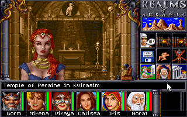
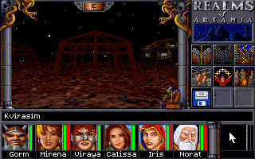
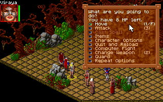

名稱：阿卡尼亞傳說2／阿卡尼亞王國2／阿卡尼亞之地2：星際踪跡／星痕 (Realms of Arkania: Star Trail，英文版)
簡介：Attic 1994年出品的角色扮演遊戲，由Sir-Tech翻成英文並代理發行，以直角3D畫面
顯示，採團隊回合策略制戰鬥 [待補]。



備註：本版為光碟版
保護：手冊密碼，破解碼：
STAR.EXE
3A 44 2B 74 20
8A -- -- EB --
備註：光碟版要放入光碟才有更多的畫面，或修改PATH.CFG為.\，並將光碟內容拷貝到安裝
目錄亦可。
備註：DosBox執行時，需設定聲霸卡的irq=5，否則會聽不到語音。